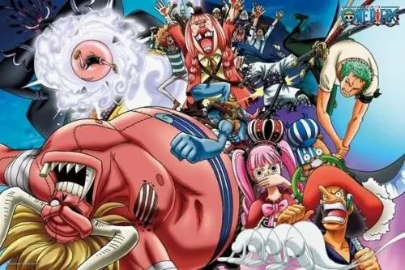

Arc Thriller Bark

La saga "Thriller Bark" est une partie de l'hisoire de One Piece qui se déroule l'île de Thriller Bark. Voici un résumé de l'histoire :
- L'équipage de Luffy arrive sur une île mystérieuse appelée "Thriller Bark", qui est en réalité un navire géant appartenant au pirate Gekko Moria et à son équipage de zombies. Luffy et ses amis se retrouvent bientôt confrontés à une armée de morts-vivants et à des créatures étranges qui peuplent l'île.
- Lors de leur exploration de l'île, ils rencontrent un squelette vivant nommé Brook, qui a été séparé de son corps depuis plusieurs années. Brook se joint à l'équipage de Luffy en échange de leur aide pour retrouver son corps.
- Luffy et ses amis découvrent ensuite que Moria a volé l'ombre de leur ami Zoro, le rendant incapable de se battre. Ils doivent alors affronter Moria et son équipage pour récupérer l'ombre de Zoro et vaincre Moria.
- Au cours de leur bataille, l'équipage de Luffy doit faire face à de nombreux défis, notamment un combat contre Oars, un géant ressuscité par Moria, ainsi qu'un affrontement avec Kuma, l'un des membres des "Seven Warlords of the Sea".
- Finalement, Luffy et ses amis parviennent à vaincre Moria et à récupérer l'ombre de Zoro, et ils quittent l'île de Thriller Bark avec Brook comme nouveau membre de l'équipage. L'arc "Thriller Bark" est également marqué par des révélations sur le passé de Brook et sur les liens entre Moria et l'un des ennemis les plus redoutables de Luffy, Kaido.